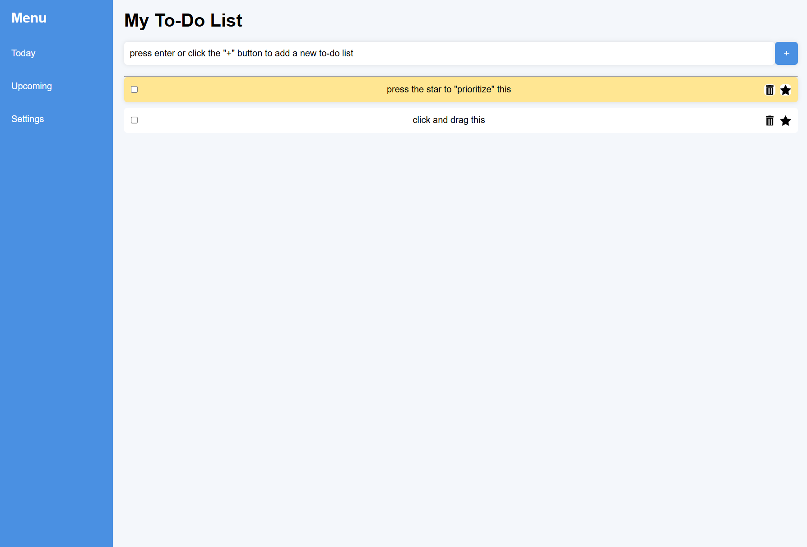

To-Do List (February)
 This was an individual project focused on building a functional to-do list website using front-end web
development.
This was an individual project focused on building a functional to-do list website using front-end web
development.
Tools Used
- Figma - initial layout design
- HTML - page structure
- CSS - visual styling
- Javascript - functioning and interacting features
Experience
I first designed the app in Figma from scratch without relying on a lot of inspiration from other apps. Because this was an independent project, I kept the design simple for myself since I had very little experience with learning Javascript.

Challenges
The biggest challenge in this project was Javascript. Since this coding language was still new to me, implementing drag-and-drop and task interactions was very difficult for me. To overcome this, I relied on studying examples from my teacher and applying those concepts to my own code.
Habits of Mind
- Independence - completed the project individually
- Problem Solving - implementing interactive features
- Creativity - designed original layout
Outcome & Reflecting
This project became one of my strongest individual projects so far–despite having to use my teacher’s examples. Applying Javascript as a new programming language has helped me show my learning and adapting independently.